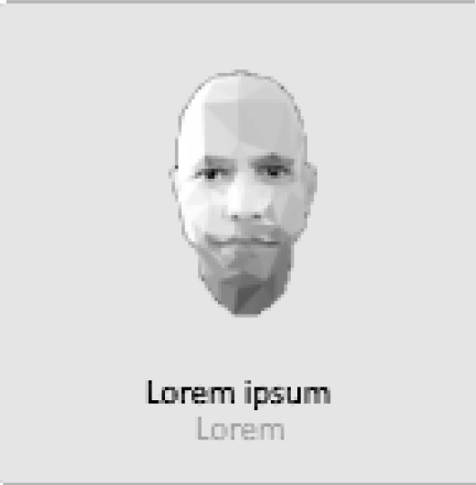
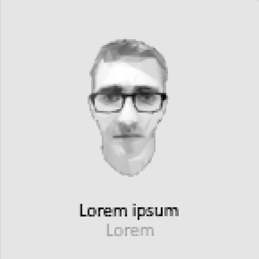
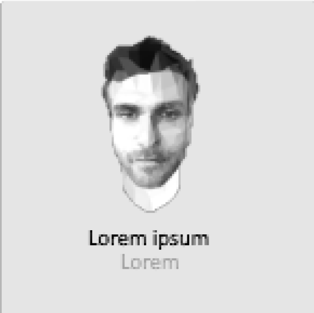

Bienvenue chez TSMC Covoiturage, votre partenaire de confiance pour des déplacements durables et écoresponsables. En tant que leader dans le domaine du covoiturage, nous sommes déterminés à transformer la manière dont le monde se déplace en favorisant une approche plus verte et plus connectée du transport.
Chez TSMC Covoiturage, notre mission est claire : révolutionner la mobilité en offrant des solutions de covoiturage pratiques, abordables et respectueuses de l'environnement. Nous croyons fermement que chaque kilomètre partagé est une étape vers un avenir plus durable, et nous sommes fiers de jouer un rôle actif dans la création d'un monde où les déplacements ne compromettent pas la santé de notre planète.
Nous sommes passionnément engagés envers le transport vert et la promotion d'un mode de vie écologique. En tant qu'entreprise consciente de son impact environnemental, nous mettons tout en œuvre pour réduire notre empreinte carbone. En encourageant le covoiturage, nous contribuons à diminuer les émissions de gaz à effet de serre, à désengorger les routes et à créer des communautés plus durables.
TSMC Covoiturage offre une plateforme conviviale et intuitive, permettant à nos utilisateurs de partager leurs trajets quotidiens en toute simplicité. Que vous soyez employé de TSMC ou utilisateur externe, notre service de covoiturage vous connecte avec des conducteurs partageant les mêmes trajets, favorisant ainsi des déplacements plus économiques, sociaux et respectueux de l'environnement.
Nous aspirons à étendre notre service de covoiturage dans tous les sites de TSMC à travers le monde. En unissant nos forces, nous pouvons créer un réseau mondial de covoiturage, offrant des avantages notables en termes de durabilité, de réduction des coûts et de renforcement des liens communautaires.
TSMC Covoiturage vous invite à rejoindre notre communauté croissante de covoitureurs engagés. Ensemble, nous pouvons faire une réelle différence pour l'environnement tout en rendant nos trajets plus agréables et économiques.
Rejoignez TSMC Covoiturage dès aujourd'hui et contribuez à façonner un avenir plus vert pour tous !


